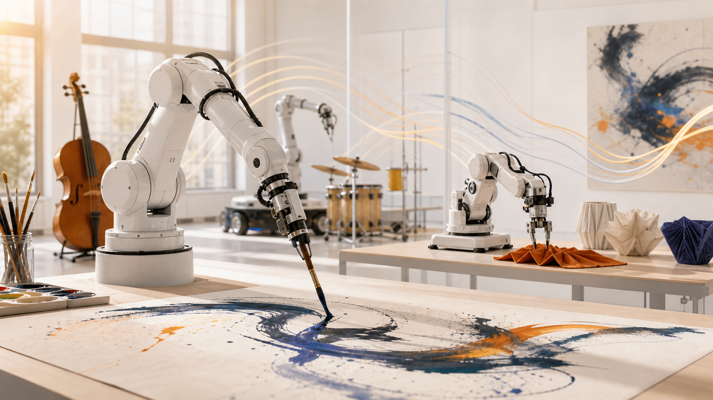

Creative Robotics Posters
For any robotics-and-arts paper, system, method, demo, position piece, or early result, as long as it contributes artistic, robotic, or human-centered insight beyond leaderboard improvement alone.
Submit PosterThe 1st Embodied4Arts Workshop @ RSS 2026
Embodied4Arts welcomes work at the intersection of robotics and the arts: robots that paint, draw, perform, sculpt, craft, compose, fabricate, collaborate, or otherwise participate in creative practice.
For any robotics-and-arts paper, system, method, demo, position piece, or early result, as long as it contributes artistic, robotic, or human-centered insight beyond leaderboard improvement alone.
Submit PosterAuthors who need visa, registration, or poster-printing decisions are encouraged to submit early. We will review poster submissions on a rolling basis when possible.
Ask About Timing
Overview
Robotics is entering an era of foundation models and data-driven policies, but many benchmarks still reward narrow task completion. Artistic and craft practices expose a richer set of requirements: contact-rich tool use, deformable materials, timing, expressive control, subjective human evaluation, authorship, and cultural context.
In these settings, small modeling errors leave visible traces. A robot painting a line, folding cloth, carving a form, dancing with a human, or performing music must be physically grounded, controllable, and expressive. Embodied4Arts brings together robotics, the arts, HRI, robot learning, manipulation, control, world models, graphics, fabrication, and creative AI to discuss systems and ideas that move beyond benchmark chasing.
Motivating Questions
How can generative models become generative motor programs that obey physical constraints?
What metrics capture style, expressivity, preference, and authorship beyond success or pixel similarity?
How can robots imagine creative outcomes while maintaining contact, material, and safety validity?
How should human feedback guide creative robots without collapsing artistic agency into optimization alone?
Areas of Interest
Converting intent from text, image, or sketch into executable stroke programs under tool, surface, and motion constraints.
Modeling timing, dynamics, articulation, compliance, and co-performance rather than note correctness alone.
Learning and planning for folding, weaving, sewing, knotting, draping, and fabrication-aware manipulation.
Speakers and Panelists
Status labels will be updated as speaker confirmations and RSS scheduling become final.
Texas A&M University
Robotic painting and evaluationUCLA
Graphics and embodied creationNVIDIA Research
Human-AI co-creation toolsUC Santa Barbara
Computational craftCMU / Google DeepMind
Generative audio and musicUC San Diego
Co-creative music systemsStyle3D
Physics-based cloth simulationGhent University / imec
Cloth manipulation benchmarksColumbia University
Fabric and deformable manipulationStanford University
World models for long-horizon skillsUC Berkeley
Model-based robot learningProgram
Opening remarks: scope, goals, and poster themes
Invited talks: painting as programs and expressive music control
Coffee break and poster session
Invited talk: deformables, craft, and physical simulation
Contributed lightning talks
Poster spotlight talks and community discussion
Panel discussion and audience Q&A
Breakout discussions and report-back
Closing and community next steps
Call for Contributions
We invite non-archival poster contributions on robotics and the arts: extended abstracts, short video demos, systems, methods, position papers, design studies, creative practice reports, negative results, and early-stage ideas. We especially welcome work that creates artistic or human-centered value, not submissions whose main contribution is only improving a benchmark score.
Accepted submissions will be presented as posters, with selected works invited for short spotlight talks. Authors who need visa, registration, or poster-printing decisions should submit as early as possible; we will review poster submissions on a rolling basis when possible.
Priority poster submissions are due July 3, 2026. Late-breaking poster submissions will remain open until July 10, 2026 and may be considered depending on available program space.